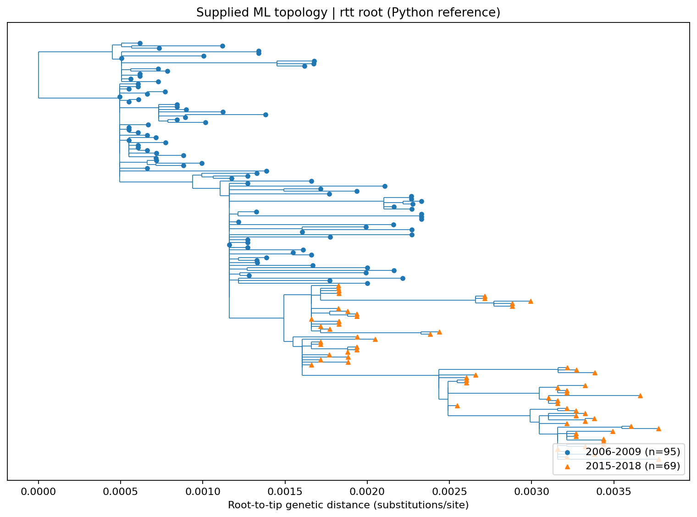
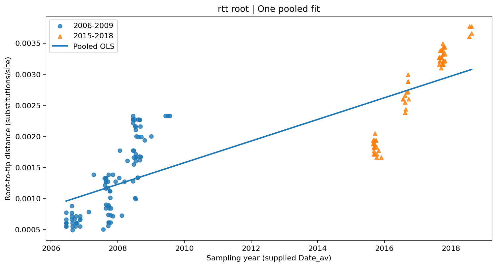
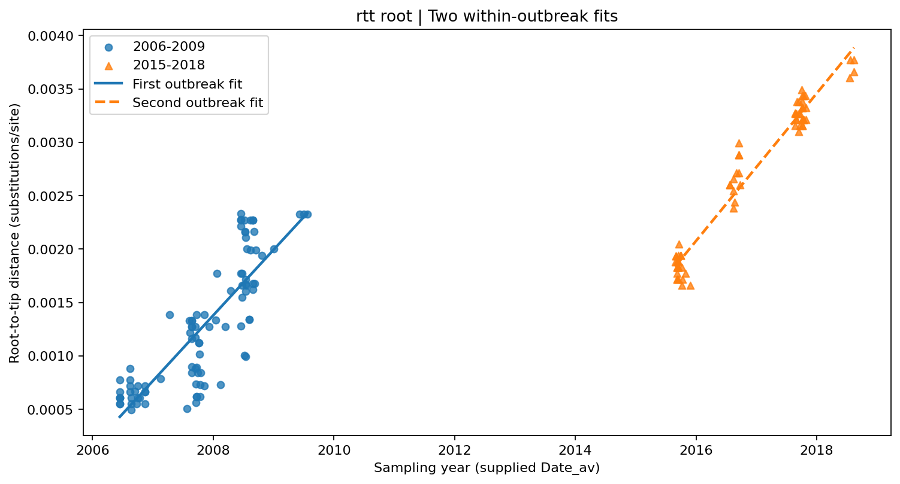
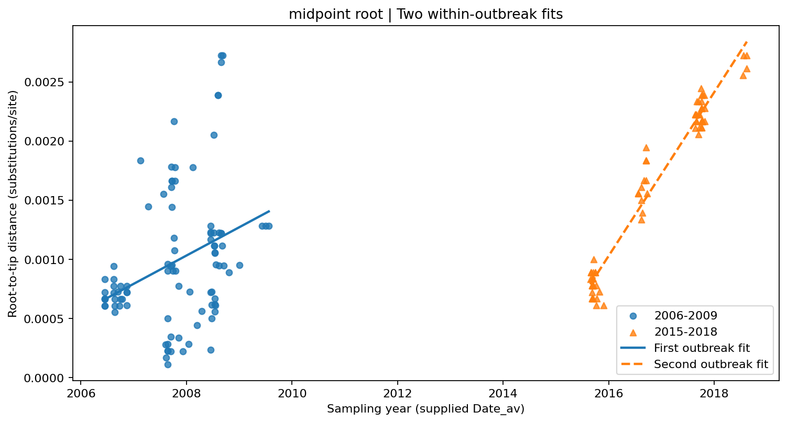
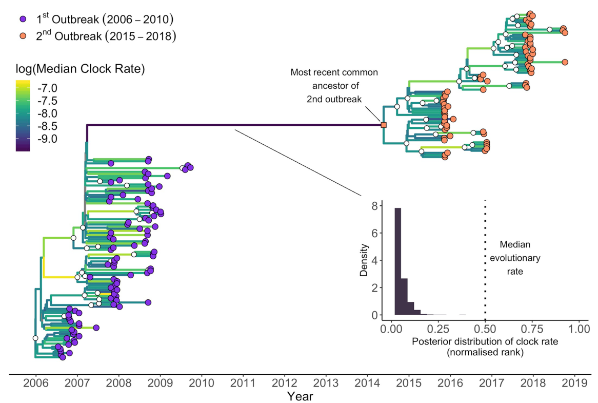
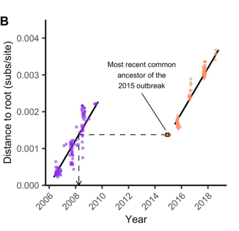

Metadata-derived histogram. Counts are samples, not cases. Reference calculation in Python.
Reference material only. The normal student script performs the scientific operations in R; no native dated tree or rates were fabricated for this release.
PASCALL | OFFLINE FIGURES | 2
A supplied tree, an explicitly estimated reference root

Supplied run 16 ML topology; positive-correlation root calculated independently in Python. Not an ape execution and not a dated tree.
Reference material only. The normal student script performs the scientific operations in R; no native dated tree or rates were fabricated for this release.
PASCALL | OFFLINE FIGURES | 3
The pooled diagnostic

Actual Python OLS on the reference-rooted tree. Shared ancestry prevents interpreting ordinary regression uncertainty as independent phylogenetic evidence.
Reference material only. The normal student script performs the scientific operations in R; no native dated tree or rates were fabricated for this release.
PASCALL | OFFLINE FIGURES | 4
The within-outbreak diagnostic

Separate descriptive OLS fits on the same points. Compare the intercept displacement as well as the slopes; do not interpret an intercept as a reconstructed ancestor.
Reference material only. The normal student script performs the scientific operations in R; no native dated tree or rates were fabricated for this release.
PASCALL | OFFLINE FIGURES | 5
The root sensitivity check

Same supplied ML tree, midpoint reference root; compare the first-outbreak slope with the preceding page. The root is an analysis choice.
Reference material only. The normal student script performs the scientific operations in R; no native dated tree or rates were fabricated for this release.
PASCALL | OFFLINE FIGURES | 6
Published comparison: the relaxed-clock time tree

Pascall et al. (2020), Fig. 3, cropped from p. 5, CC BY. This is the published BEAST analysis, NOT a native output from this practical. Its colour scale is the original scale, not the log10 scale of the R teaching plot.
Reference material only. The normal student script performs the scientific operations in R; no native dated tree or rates were fabricated for this release.
PASCALL | OFFLINE FIGURES | 7
Published comparison: discontinuous genetic time

Pascall et al. (2020), Fig. 4B, cropped from p. 6, CC BY. The square is an inferred ancestor, not an observed sample. The corresponding ancestral sequence is not reconstructed in this practical.
Reference material only. The normal student script performs the scientific operations in R; no native dated tree or rates were fabricated for this release.